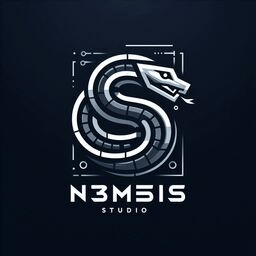
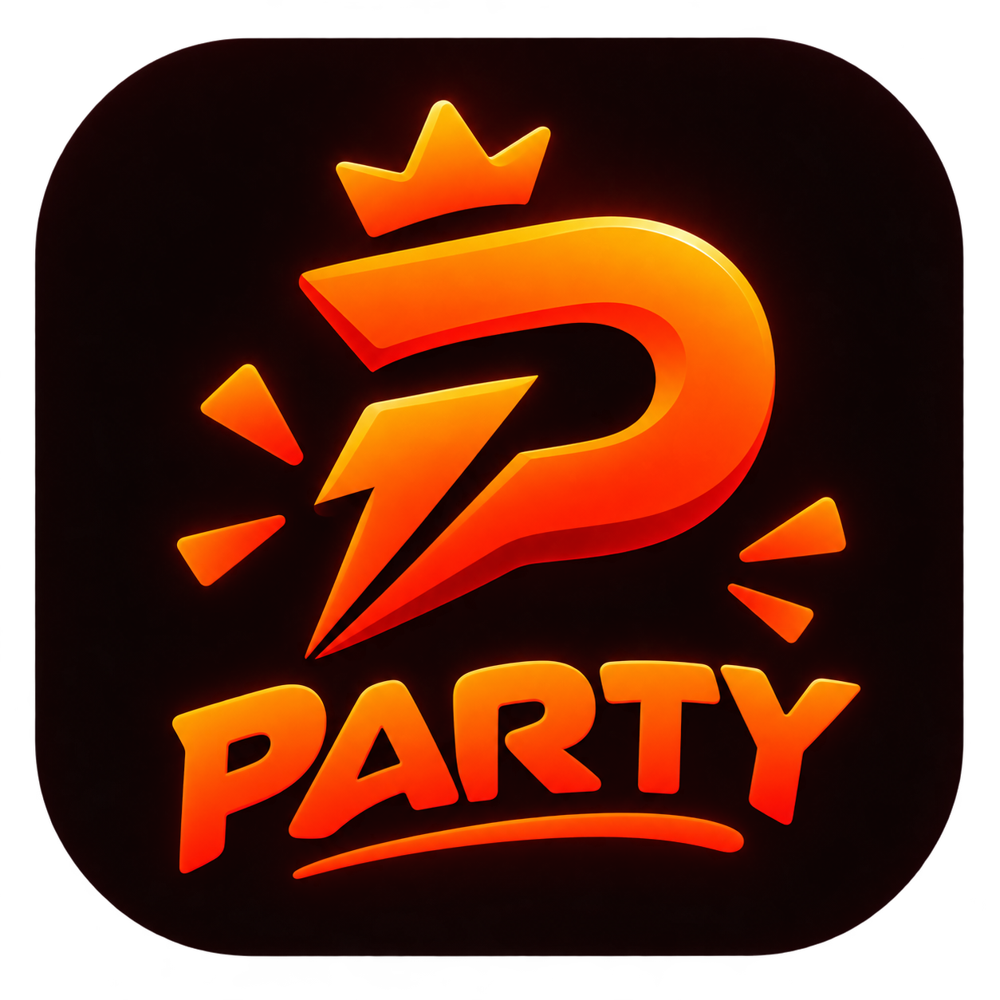
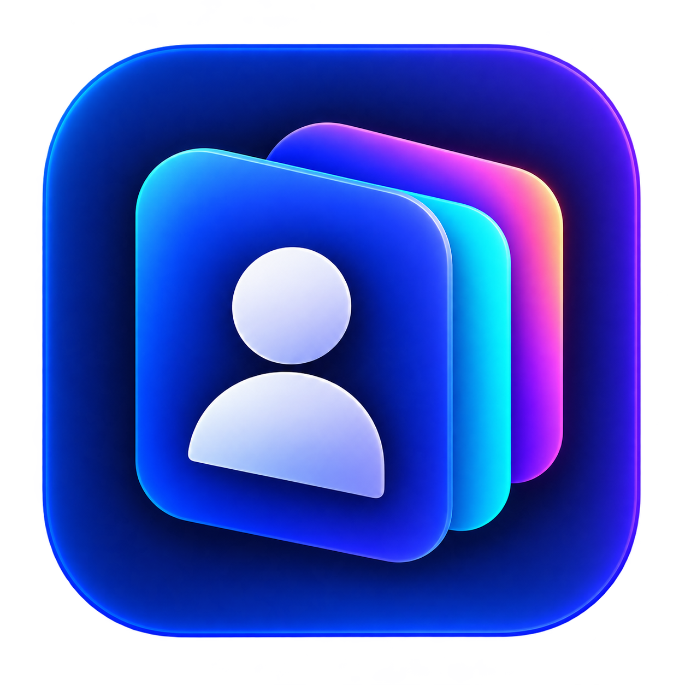
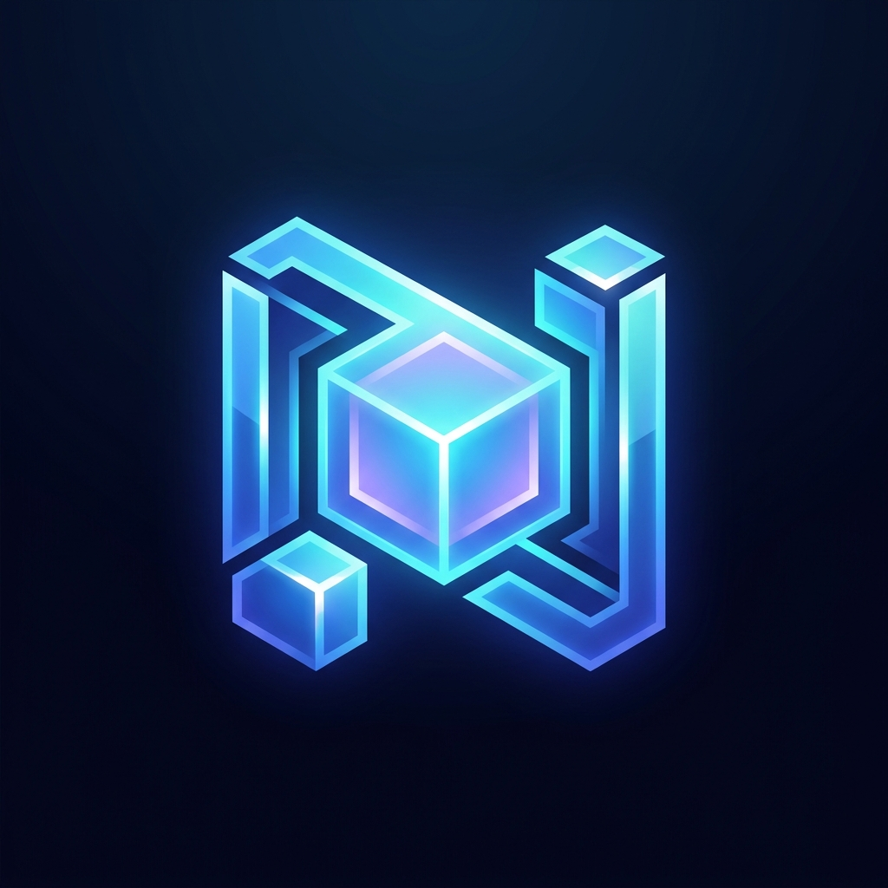

ESTUDIO
¡La web de N3mesis Studio ya está aquí!
Un punto de encuentro para conocer nuestras aplicaciones, consultar sus fichas, revisar las preguntas frecuentes y acceder a las descargas que ya están disponibles.
Explorar aplicaciones ↗
N3MESISSTUDIOCreamos herramientas digitales con personalidad, pensadas para ser útiles, sencillas y agradables de utilizar.
Cada proyecto tiene su propósito, su estilo y una experiencia diseñada para lo que necesita resolver.

Juegos y planes para compartir buenos momentos.

Una agenda de contactos privada y organizada.
Un espacio en exploración para futuras utilidades.

Instancias, loaders y complementos para Minecraft Java en Windows.
Un espacio para crear comunidades, compartir intereses y organizar actividades con otras personas.
Una forma sencilla de conectar el móvil Android y el PC Windows para compartir archivos, texto y enlaces.
Cada tarjeta abre la ficha completa de su proyecto. Los estados indican si está disponible, en desarrollo o todavía en fase conceptual.
Novedades, lanzamientos y avances de nuestros proyectos. Esta sección irá creciendo junto al estudio.
Un punto de encuentro para conocer nuestras aplicaciones, consultar sus fichas, revisar las preguntas frecuentes y acceder a las descargas que ya están disponibles.
Explorar aplicaciones ↗La versión 2.2.0 ya está publicada para Windows. Consulta su ficha para ver detalles y acceder al lanzamiento oficial.
Ver Launcher ↗Seguimos trabajando en Nexo. Su ficha reúne el planteamiento del proyecto, las preguntas frecuentes y los avances que se vayan confirmando.
Conocer Nexo ↗Party está publicada para Android. El creador de planes continúa en revisión; consulta su ficha antes de usar esa función.
Ver Party ↗N3mesis Studio es un estudio independiente centrado en crear aplicaciones y herramientas digitales. Nos mueve la curiosidad, el aprendizaje continuo y la idea de que un buen producto empieza por entender a quien lo necesita.
Desde la primera idea hasta los últimos detalles, buscamos experiencias claras, útiles y cuidadas. Cada aplicación tiene su propia personalidad, pero todas comparten la misma atención por el producto.
Un proceso sencillo, con intención en cada paso.
Entender la necesidad, definir el objetivo y encontrar el enfoque adecuado.
Dar forma a una experiencia visual clara, coherente y fácil de utilizar.
Convertir el diseño en una aplicación funcional y probar cada parte.
Publicar, escuchar y seguir evolucionando con cada nueva versión.
¿Quieres conocer más sobre nuestros proyectos o seguir su desarrollo? Encuentra N3mesis Studio en GitHub.
Visitar GitHub ↗